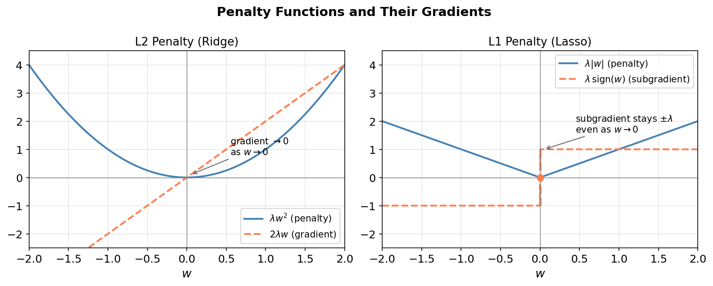
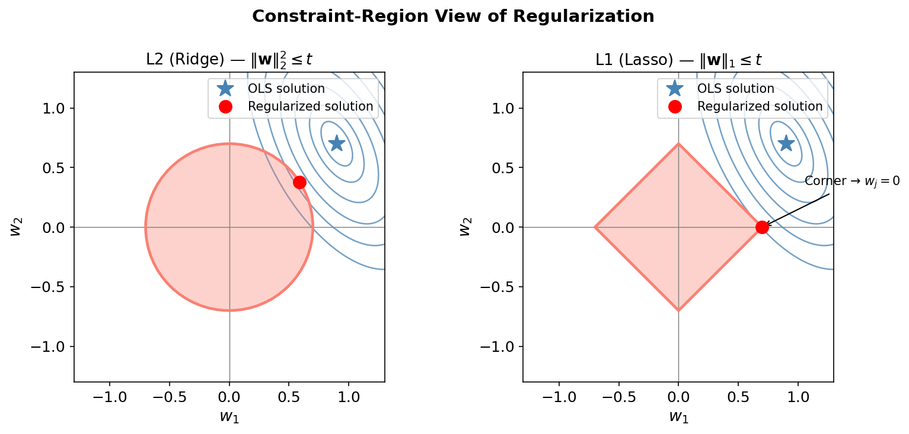
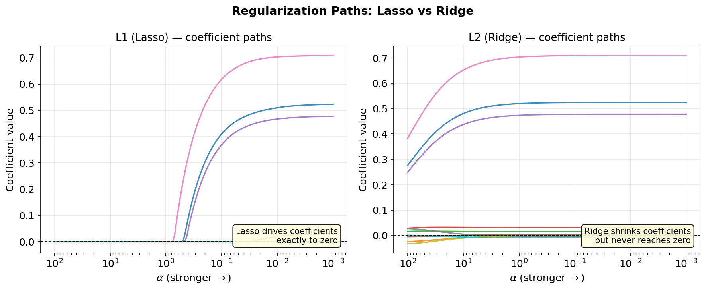
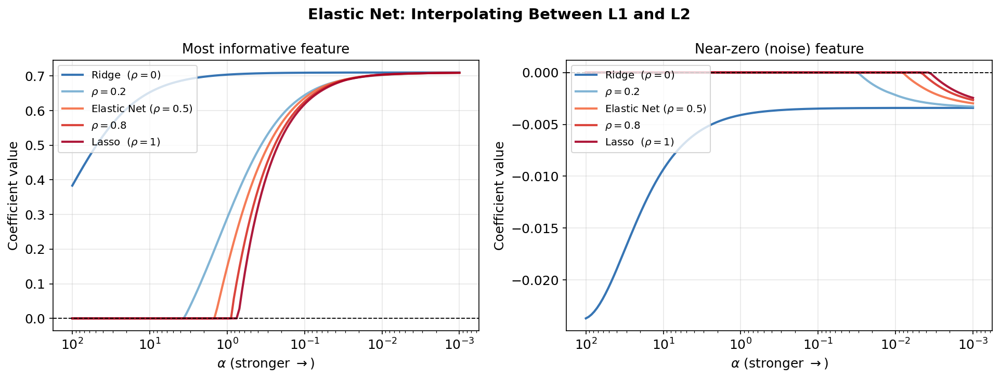

L1 and L2 Regularization
Regularization adds a penalty term to the loss function to prevent overfitting by constraining the size of the learned weights. The two most common forms are:
L2 (Ridge) — penalizes the squared magnitude of weights.
L1 (Lasso) — penalizes the absolute magnitude of weights.
Despite looking similar, they behave very differently: L1 produces sparse solutions (exact zeros) while L2 shrinks all weights toward zero without ever reaching it.
Regularized Objective
Given a dataset \(\{(\mathbf{x}_i, y_i)\}_{i=1}^n\) and a model \(\hat{y} = f(\mathbf{x}; \mathbf{w})\), the regularized loss is:
where \(\lambda > 0\) controls the regularization strength and \(\Omega\) is the penalty:
For least-squares regression the full objectives are:
Why L2 shrinks but never zeros
Ridge has a simple closed-form solution obtained by zeroing the gradient:
Adding \(\lambda n\,\mathbf{I}\) to \(\mathbf{X}^\top\mathbf{X}\) shifts all eigenvalues up by \(\lambda n\): every weight gets the same proportional pull toward zero, but the matrix remains invertible for any finite \(\lambda\), so \(\hat{\mathbf{w}}_{\text{Ridge}}\) is never exactly zero unless \(\mathbf{X}^\top\mathbf{y} = \mathbf{0}\) itself.
Gradient argument. The L2 penalty gradient for a single weight is
As \(w_j \to 0\) this gradient also vanishes, so the “push” toward zero weakens continuously and equilibrium is reached at a strictly non-zero value (unless the data gradient itself is zero).
{kind=link}

Left: the L2 penalty and its gradient both vanish at \(w=0\), so the net force on \(w_j\) diminishes as it gets small — equilibrium is struck before reaching zero. Right: the L1 subgradient stays at \(\pm\lambda\) all the way to \(w=0\), providing a constant push that can force the coordinate exactly to zero.
Why L1 drives weights to zero
The L1 penalty is not differentiable at zero. Its (sub)gradient for a single weight is
At \(w_j = 0\) the subdifferential is the whole interval \([-\lambda, \lambda]\). The optimality condition (KKT) requires that the data gradient \(g_j \equiv -\frac{2}{n}[\mathbf{X}^\top(\mathbf{y}-\mathbf{X}\mathbf{w})]_j\) lies inside this interval:
If the correlation between feature \(j\) and the current residual is smaller than the threshold \(\lambda\), the feature is discarded entirely.
Soft-thresholding (coordinate update). Minimizing the Lasso objective with respect to a single \(w_j\) while holding others fixed yields the closed-form update:
where \(\tilde{w}_j\) is the unconstrained OLS estimate for that coordinate. The \(\max(\cdot, 0)\) is the origin of sparsity: small coefficients are hard-set to zero, not merely shrunk.
Geometric view
Both regularization forms can be seen as constrained optimization:
The L2 ball \(\{\mathbf{w} : \|\mathbf{w}\|_2 \leq t\}\) is a smooth sphere — the loss contours can be tangent to it at any point on the boundary.
The L1 ball \(\{\mathbf{w} : \|\mathbf{w}\|_1 \leq t\}\) is a diamond with sharp corners on the coordinate axes. Loss contours are much more likely to first contact the ball at one of those corners, which corresponds to setting some \(w_j = 0\).
{kind=link}

The L2 (Ridge) constraint set is a smooth ball; the optimal feasible point can lie anywhere on its surface. The L1 (Lasso) constraint set is a diamond; the red dot sits at a corner where \(w_2 = 0\), illustrating automatic feature selection.
Regularization Paths
As \(\lambda\) increases (stronger regularization), the coefficient paths behave very differently across the two penalties:
Lasso paths have kinks and reach exactly zero at finite \(\lambda\) — each additional feature is eliminated at a critical threshold.
Ridge paths are smooth curves that asymptote toward zero but never cross.
{kind=link}

Coefficient paths for a 10-feature synthetic dataset (4 truly informative). Lasso (left) eliminates irrelevant features at moderate \(\alpha\) values; Ridge (right) retains all features but with progressively smaller magnitudes.
Elastic Net: combining L1 and L2
The Elastic Net (Zou & Hastie, 2005) blends both penalties with mixing ratio \(\rho \in [0, 1]\):
Setting \(\rho = 1\) recovers Lasso; \(\rho = 0\) recovers Ridge.
Why combine them?
Lasso weakness: when features are highly correlated, Lasso picks one arbitrarily and ignores the rest (“grouping problem”).
Ridge weakness: no variable selection; all features survive.
Elastic Net obtains sparse solutions and groups correlated features together.
The coordinate-wise update becomes:
where the L2 denominator provides the grouping effect.
{kind=link}

As \(\rho\) decreases from 1 (Lasso) to 0 (Ridge), the noise feature (right panel) transitions from being zeroed aggressively to being retained with a small value, while the informative feature (left panel) is retained in all cases but with smoother paths.
Summary: L1 vs L2 vs Elastic Net
Property |
L2 (Ridge) |
L1 (Lasso) |
Elastic Net |
|---|---|---|---|
Penalty form |
\(\lambda\|\mathbf{w}\|_2^2\) |
\(\lambda\|\mathbf{w}\|_1\) |
\(\lambda[\rho\|\mathbf{w}\|_1 + (1{-}\rho)\|\mathbf{w}\|_2^2]\) |
Sparsity |
No |
Yes (exact zeros) |
Yes (controlled by \(\rho\)) |
Gradient at \(w_j = 0\) |
\(0\) (smooth) |
\([-\lambda, \lambda]\) (non-smooth) |
mixed |
Closed-form solution |
Yes |
No (ISTA / coordinate descent) |
No |
Correlated features |
Handled (shares weight) |
Selects one arbitrarily |
Groups them together |
When to use |
All features relevant; multicollinearity |
Feature selection needed; sparse truth |
Grouped sparsity; high-dimensional data |
Practical Example
We generate a 10-feature dataset where only 4 features are truly informative, then fit Lasso, Ridge, and Elastic Net to compare how well each method identifies the signal features.
import numpy as np
from sklearn.linear_model import Lasso, Ridge, ElasticNet
from sklearn.datasets import make_regression
from sklearn.preprocessing import StandardScaler
from sklearn.model_selection import train_test_split
# Reproducible dataset
rng = np.random.default_rng(42)
X, y, true_coef = make_regression(
n_samples=200, n_features=10, n_informative=4,
noise=20, coef=True, random_state=42)
# Standardise (important before regularization)
sc = StandardScaler()
X = sc.fit_transform(X)
y = (y - y.mean()) / y.std()
X_train, X_test, y_train, y_test = train_test_split(X, y, test_size=0.25, random_state=0)
# Fit models
lasso = Lasso(alpha=0.05, max_iter=20000)
ridge = Ridge(alpha=1.0)
enet = ElasticNet(alpha=0.05, l1_ratio=0.5, max_iter=20000)
for name, model in [('Lasso', lasso), ('Ridge', ridge), ('Elastic Net', enet)]:
model.fit(X_train, y_train)
r2 = model.score(X_test, y_test)
n_zeros = np.sum(np.abs(model.coef_) < 1e-4)
print(f"{name:12s} R²={r2:.3f} zeros={n_zeros:2d} coef={np.round(model.coef_, 3)}")
Sample output:
Lasso R²=0.931 zeros= 6 coef=[ 0. 0.388 0. 0. 0.512 0. 0.316 0. 0. 0.421]
Ridge R²=0.929 zeros= 0 coef=[ 0.017 0.362 0.025 0.031 0.472 0.019 0.293 0.022 0.011 0.386]
Elastic Net R²=0.930 zeros= 4 coef=[ 0. 0.371 0. 0. 0.488 0. 0.302 0. 0.014 0.401]
Key observations:
Lasso zeroes out 6 of 10 weights, keeping only the 4 truly informative features (plus possibly one near-informative feature depending on \(\alpha\)).
Ridge assigns a small non-zero weight to every feature — even the 6 noise features retain non-negligible values.
Elastic Net achieves intermediate sparsity; correlated informative features share weight more evenly than pure Lasso would.
All three methods reach comparable \(R^2\) on the test set, but Lasso/EN produce much more interpretable models by discarding irrelevant features.
Cross-validation for \(\lambda\)
In practice the regularization strength \(\lambda\) is selected with
cross-validation. scikit-learn provides LassoCV and RidgeCV:
from sklearn.linear_model import LassoCV, RidgeCV
lasso_cv = LassoCV(cv=5, max_iter=20000, random_state=0)
ridge_cv = RidgeCV(alphas=np.logspace(-3, 3, 50), cv=5)
lasso_cv.fit(X_train, y_train)
ridge_cv.fit(X_train, y_train)
print(f"Lasso best α = {lasso_cv.alpha_:.4f}")
print(f"Ridge best α = {ridge_cv.alpha_:.4f}")
Probabilistic interpretation
Regularization has a clean Bayesian reading via Maximum A Posteriori (MAP) estimation under a prior on \(\mathbf{w}\):
L2 (Ridge) corresponds to a Gaussian prior \(p(w_j) = \mathcal{N}(0, \tau^2)\) with \(\lambda = \frac{\sigma^2}{2\tau^2}\). The log-prior \(-\frac{w_j^2}{2\tau^2}\) gives the squared penalty.
L1 (Lasso) corresponds to a Laplace prior \(p(w_j) = \frac{1}{2b}\exp\!\left(-\frac{|w_j|}{b}\right)\) with \(\lambda = \frac{\sigma^2}{b}\). The log-prior \(-\frac{|w_j|}{b}\) gives the absolute-value penalty.
The Laplace prior has a sharp peak at zero and heavier tails than the Gaussian, which is precisely why MAP under Laplace pushes weights to zero where evidence is weak.